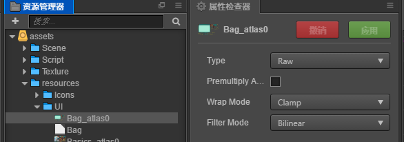

Cocos Creator
运行Demo
- 从GitHub Clone或者从官网产品页上直接下载FairyGUI-cocoscreator的例子。
- SDK基于Cocos Creator 2.x版本，1.x版本不支持，所以请使用2.0以上版本的Creator，推荐使用2.0.7或以上。
- 用Cocos Creator打开下载后的例子工程。
- 直接运行可以看到效果。
- UI界面的工程在UIProject目录，需要使用FairyGUI编辑器打开查看和修改。这部分文件是独立于Creator的，不需要放到Creator的assets目录下。
- 例子是使用TS编写的，但核心库是fairygui.js，所以用JS开发不会有任何问题。
- fairygui.js未经压缩，发布时cocos会自行压缩，最后的大小会在300K左右。
加载UI包
FairyGUI是以包为单位组织UI界面的。一个UI包可能包括一个或多个界面。每个UI包发布后将得到一个bin文件后缀的描述文件，和一个或多个图片作为纹理集。这些文件需要放到resources目录，以便动态加载。因为为了避免复杂的依赖的关系，以后由此带来管理的困难。我们的界面不会直接由场景里的东西引用。一个UI包可以随时加载和卸载。
在FairyGUI编辑器直接发布包到Creator的assets/resources目录或者其子目录下。

注意，图片设置为RAW格式即可，不需要设置为Sprite。因为FairyGUI会自己分析Sprite。
代码里载入包有两种方式。一种是你负责把文件加载，第二种是让FairyGUI自己去加载。第一种方式是方便你做一个混杂了其它资源的总体的加载，或者显示进度的需求等。
第一种方式：
|
第二种方式：
卸载UI包
当一个包不再使用时，可以将其卸载。
|
包卸载后，所有包里包含的贴图等资源均会被卸载，由包里创建出来的组件也无法显示正常（虽然不会报错），所以这些组件应该（或已经）被销毁。
一般不建议包进行频繁装载卸载，因为每次装载卸载必然是要消耗CPU时间（意味着耗电）和产生大量GC的。UI系统占用的内存是可以精确估算的，你可以按照包的使用频率设定哪些包是常驻内存的（建议尽量多）。
创建GRoot
每个场景都需要有一个GRoot，这是UI的根节点。场景载入后，需要手动创建GRoot。
|
创建UI
|
如果界面内容过多，创建时可能引起卡顿，FairyGUI提供了异步创建UI的方式，异步创建方式下，每帧消耗的CPU资源将受到控制，但创建时间也会比同步创建稍久一点。例如：
|
关闭界面一般用隐藏即可，即：
|
如果界面不再使用了，可以销毁它：
|
场景切换时，所有界面都会被销毁。如果不想被销毁，需要创建出界面后，把根节点设置为常驻，并且切换场景前，确保关闭界面。
|
坐标系统
GObject里的x/y/position值都是局部坐标，也就是相对于父元件的偏移。GObject没有提供直接的属性获得对象的全局坐标，但提供了方法进行转换。
如果要获得任意一个UI元件在屏幕上的坐标，可以用：
|
（注意，这里说的屏幕，是指FairyGUI语义中的屏幕，是以屏幕左上角为原点的，不是指Creator语义中的屏幕）
相反，如果要获取屏幕坐标在UI元件上的局部坐标，可以用：
|
事件系统
FairyGUI直接使用了Creator的事件系统，所以GObject.on/off其实是通过GObject.node.on/off实现的，也就是可以通过GObject.node进行任何事件的操作，包括自定义的事件。在事件回调中，cc.Event中的currentTarget反映的是这个事件是由哪个node派发的，如果要获得这个node对应哪个GObject，可以用这样的方法：
|
鼠标/触摸类事件
对于鼠标事件和触摸事件，FairyGUI里都使用自定义的事件，常量定义在fgui.Event里，这和Creator自身的cc.Node.EventType.TOUCH_BEGIN是不一样的，要注意区别。因为Creator自己的触摸逻辑很难处理穿透/不穿透，以及自定义区域点击这些情况。
鼠标/触摸事件回调函数有一个参数：evt:fgui.Event，fgui.Event继承于cc.Event。
TOUCH_BEGIN鼠标按键按下（左、中、右键），或者手指按下。鼠标按钮可以从evt.button获得，0-左键,1-中键,2-右键。如果是触摸事件，可以从evt.touchId获得手指ID；如果是鼠标事件，evt.touchId恒定为0。TOUCH_MOVE鼠标指针移动或者手指在屏幕上移动。这个事件只有两种情况会触发，1、在TOUCH_BEGIN里调用了evt.captureTouch()，那么后续的移动事件都会在这个对象上触发（无论手指或指针位置是不是在该对象上方）。2、GRoot上的TOUCH_MOVE始终会触发，不需要使用captureTouch捕获。TOUCH_END鼠标按键释放或者手指从屏幕上离开。如果鼠标或者触摸位置已经不在GObject范围内了，那么组件的TouchEnd事件是不会触发的，如果确实需要，可以在TOUCH_BEGIN里调用evt.captureTouch()请求捕获。CLICK点击事件。可以从evt.isDoubleClick判断是单击还是双击。侦听点击事件有个快捷方式：GObject.onClick(callback,…)，比GObject.on(fgui.Event.CLICK,…)简洁点。ROLL_OVER鼠标指针或者手指移入显示对象区域时触发。ROLL_OUT鼠标指针或者手指移出显示对象区域时触发。MOUSE_WHEEL鼠标滚动事件。
如果不在事件回调流程中，需要获得当前鼠标或者手指的位置，可以用：
|
在任何时候，如果需要获得当前点击的对象，或者鼠标下的对象，都可以通过以下的方式获得：
|
字体
如果要使用ttf字体，需要这些步骤：
1、首先需要得到cc.Font对象，这个对象你是从loadRes获得，还是直接在场景中通过脚本的变量获得，可按照项目需求。
2、使用fgui.UIConfig.registerFont给这个cc.Font注册一个FairyGUI里使用的字体名称，假定aFont就是cc.Font对象：
|
3、如果这个是全局字体：
|
4、如果这个是某个文字单独指定的字体，例如：

这里用到了”黑体”这个名字的字体，这是与UIConfig.defaultFont不同的字体，那么我们需要注册这种字体。即：
|